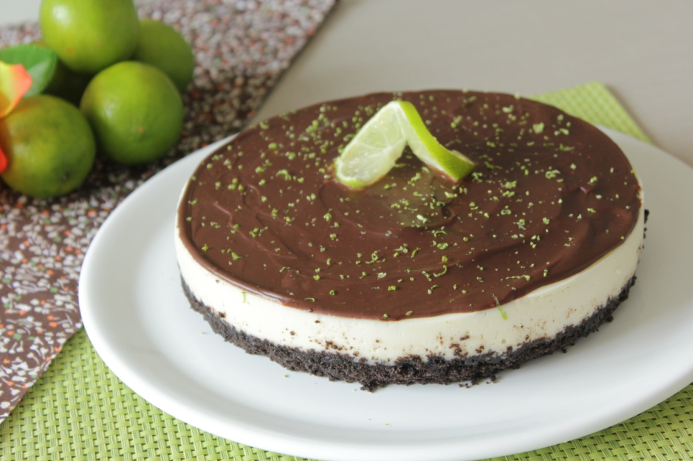

TORTA OREO DE LIMÃO E CHOCOLATE

Torta Oreo de limão e chocolate é uma sobremesa super especial, e de sabor surpreendente!!!
O contraste do acidozinho do limão com o chocolate e o biscoito Oreo ficam maravilhosos. E combinam super bem com o típico verão brasileiro. É uma sobremesa elegante e faz bonito em qualquer ocasião!!!
INGREDIENTES
- 3 pacotes de biscoito Oreo (90g cada pacote)
- 3 colheres (sopa) de manteiga derretida sem sal (60g)
- 1 lata de leite condensado (395g)
- 1 caixa de creme de leite (200g)
- ½ medida da lata de suco de limão (150ml)
- 1 pacote de gelatina em pó sem sabor (12g)
- 5 colheres (sopa) água para hidratar a gelatina
- 1 tablete de chocolate meio amargo ou ao leite (100g)
- 1/2 caixa de creme de leite (100ml)
- Raspas de limão para decorar
MODO DE PREPARO
Base de biscoito
- No processador ou no liquidificador triture os biscoitos Oreo até formar uma farofa, adicione a manteiga derretida e misture bem até ficar bem úmida.
- Coloque a farofa em uma forma redonda de 20cm de diâmetro untada com manteiga e forrada com papel manteiga. Aperte bem a farofa formando uma base.
- Leve ao forno pré-aquecido a 180 °C por 15 minutos. Retire do forno e deixe esfriar.
Recheio de limão
- No liquidificador coloque o leite condensado, o creme de leite, o suco de limão e as raspas de limão a gosto. Bata até que fique um creme homogêneo.
- Espalhe sobre a base de biscoito já fria. Leve à geladeira por 4 horas.
Cobertura de chocolate
- Derreta o chocolate em banho-maria ou no micro-ondas de 30 em 30 segundos até derreter por completo. Adicione o creme de leite e misture bem.
- Coma torta já desenformada espalhe a cobertura de chocolate e decore com raspas de limão a gosto. Volte à geladeira e sirva gelado.